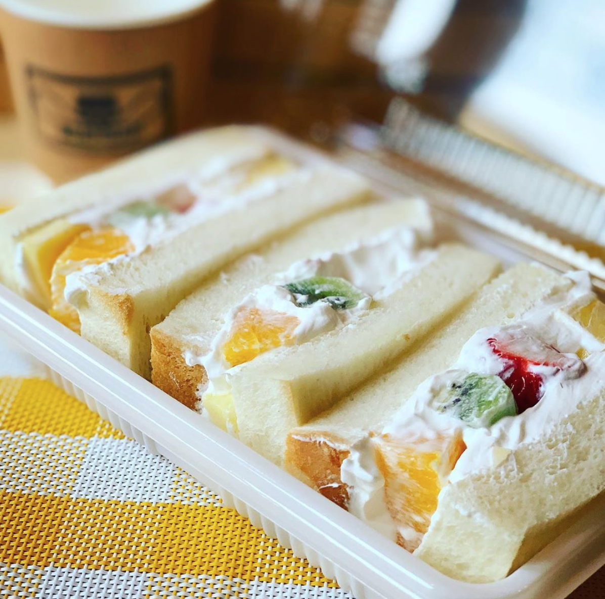
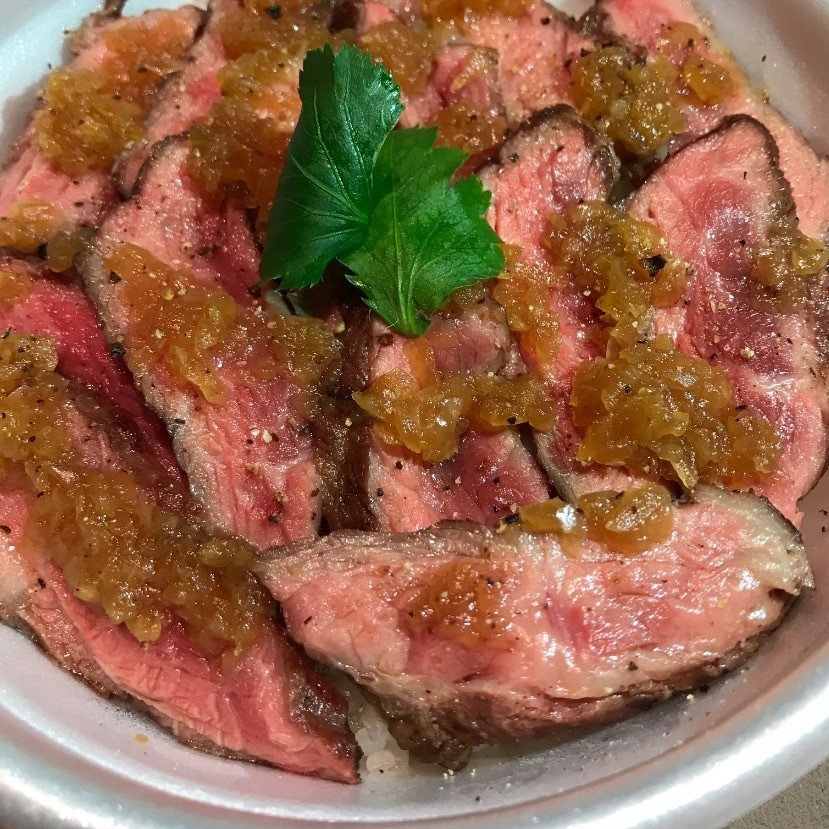
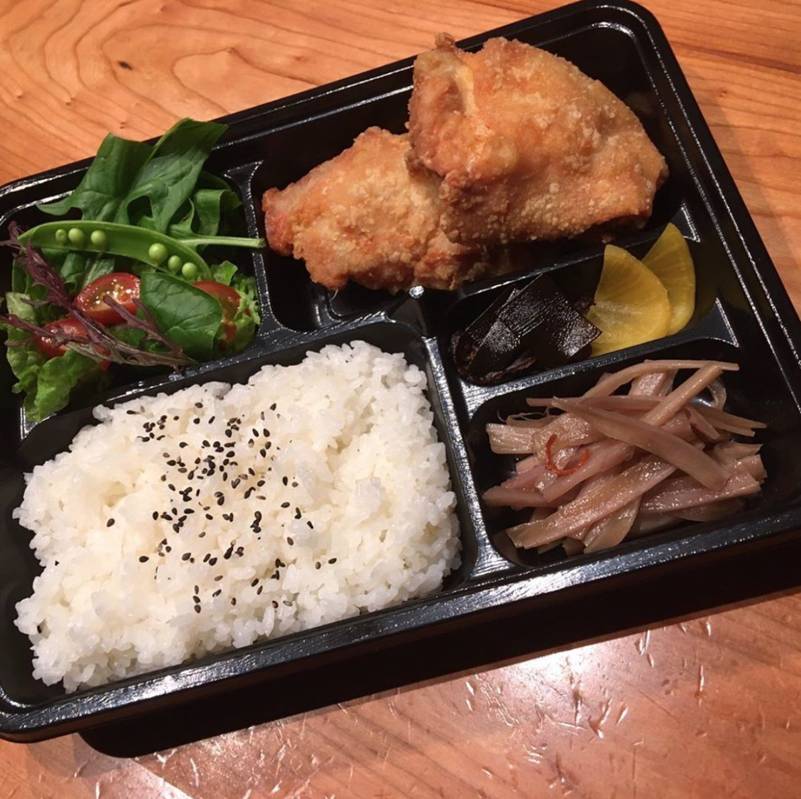
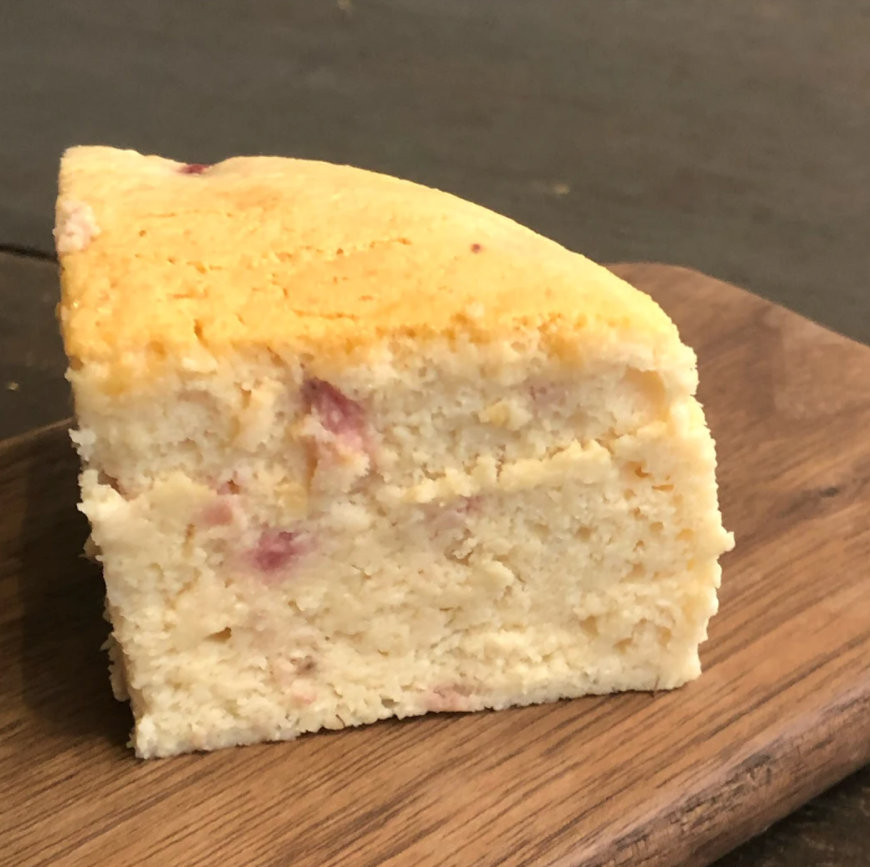
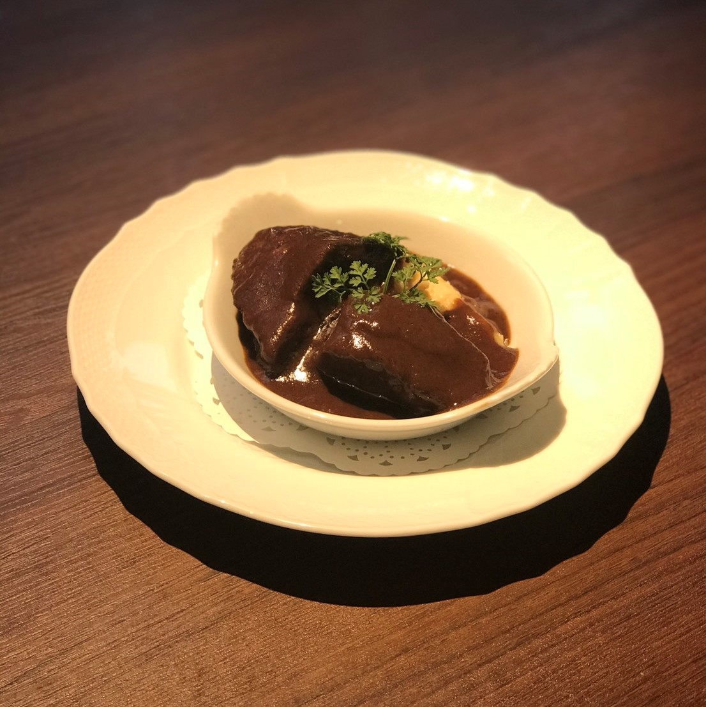

お店一覧
Shop List

ホアンカン
手作りにこだわったボリュームたっぷりのサンドイッチは種類も豊富です！

Ku-nel
食べたいように食べて、あとは寝るだけ。そんな大人のわがままを。

柳町
丹波・福知山の食材にこだわり、福知山産の京地どりを使用した親子丼、鳥名子名物のからあげ定食をお楽しみいただけます。

まぃまぃ堂
国産小麦やオーガニック素材、地元や庭でとれた素材で作ったお菓子は、どれも素朴でやさしいお味です。

ビストロｑ
福知山では数少ない正統派フレンチレストランがご提供するテイクアウトメニュー